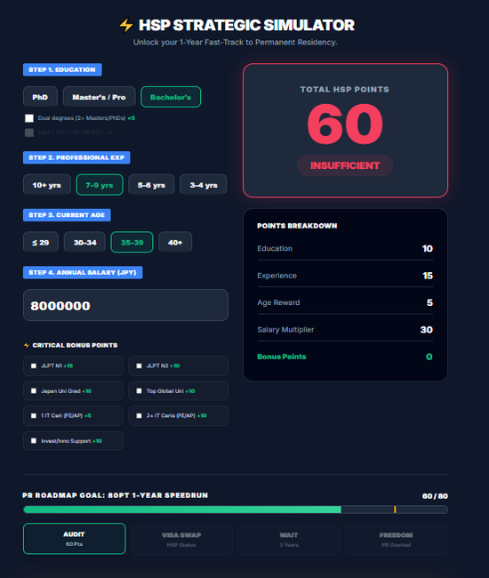
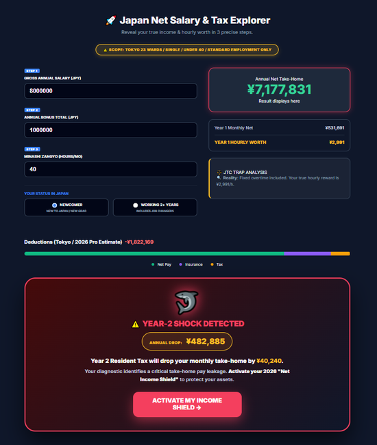
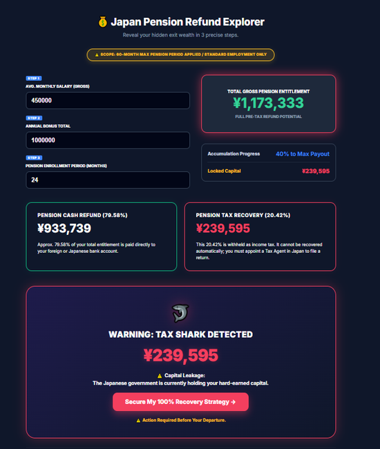
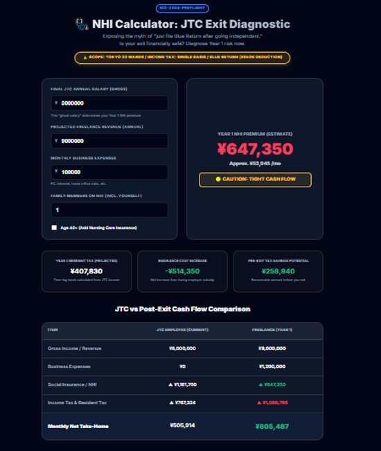

A high-performance suite of strategic simulators designed to optimize your financial and legal footprint in Japan. Engineered for precision.

Calculate points for the High-Skilled Professional visa. Optimize your path to Permanent Residency in as little as 1 year.

Visualize your true net income. Simulate the "2nd-year Resident Tax cliff" and discover legal shields for your capital.

Don't leave 20.42% to the sharks. Master the strategy to recover your full pension withdrawal amount.

Analyze National Health Insurance premiums for freelancers. Protect your cash flow during the transition phase.